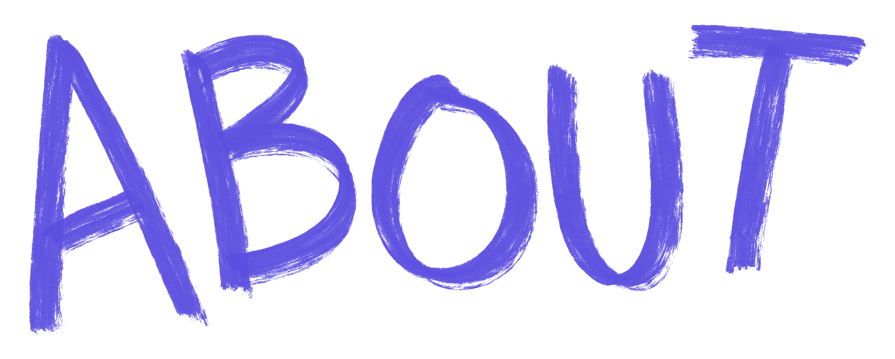
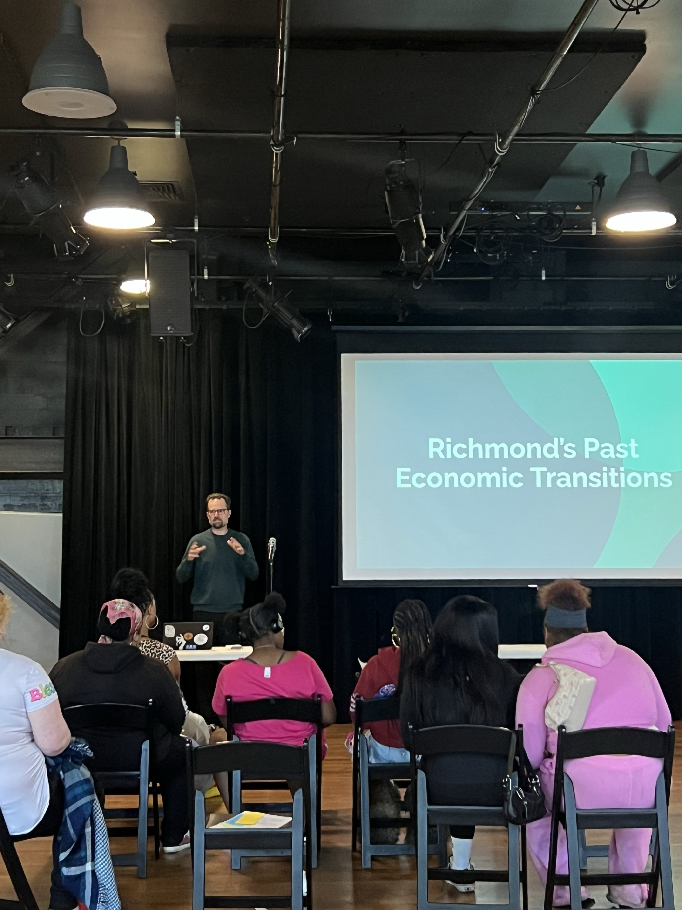
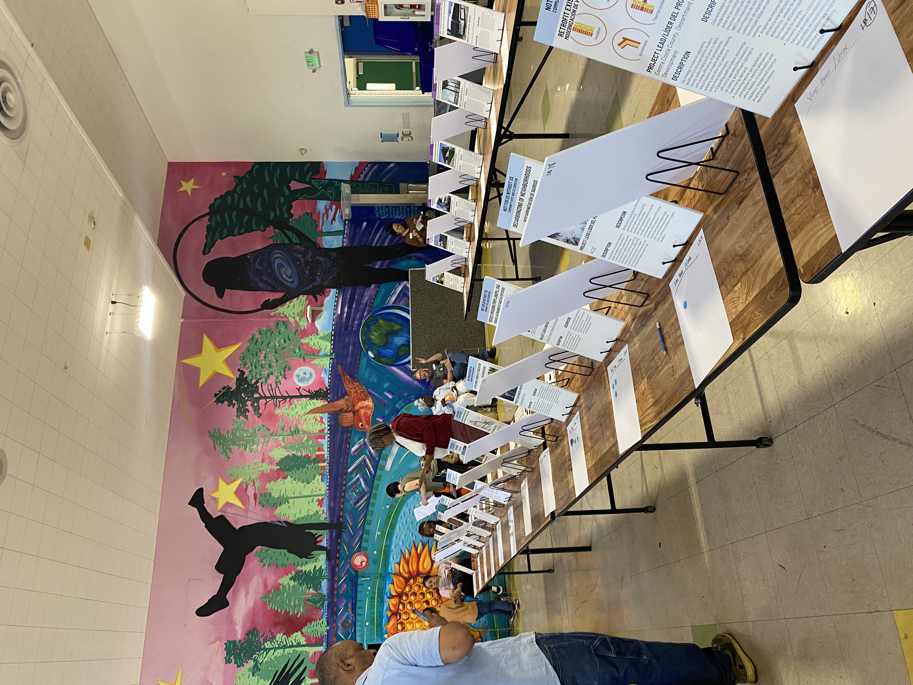
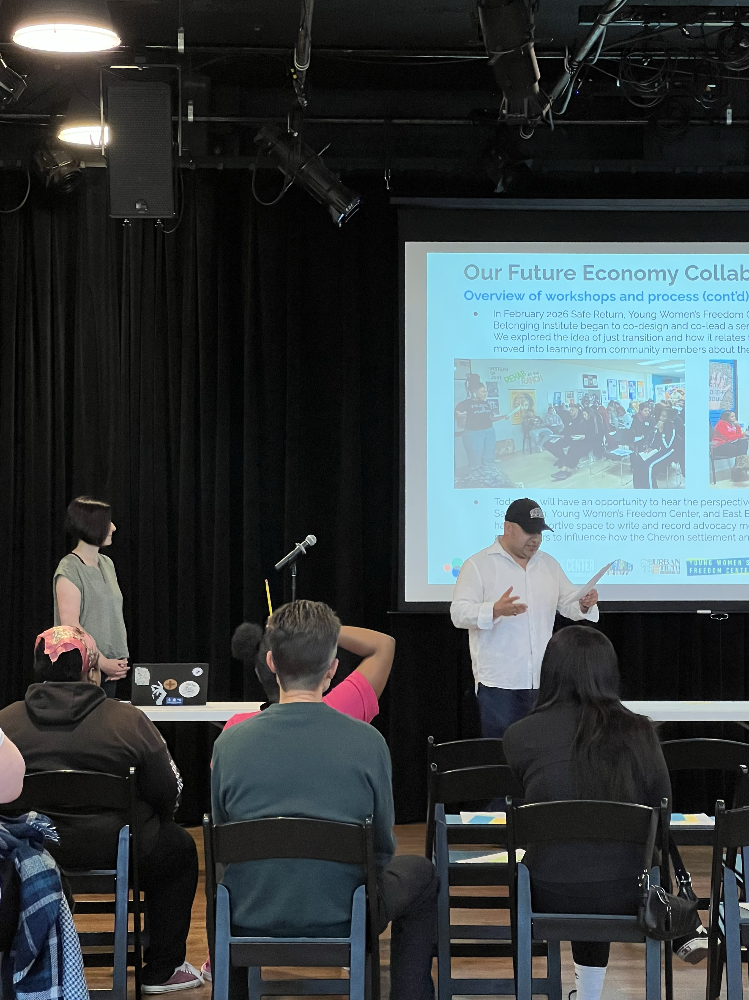
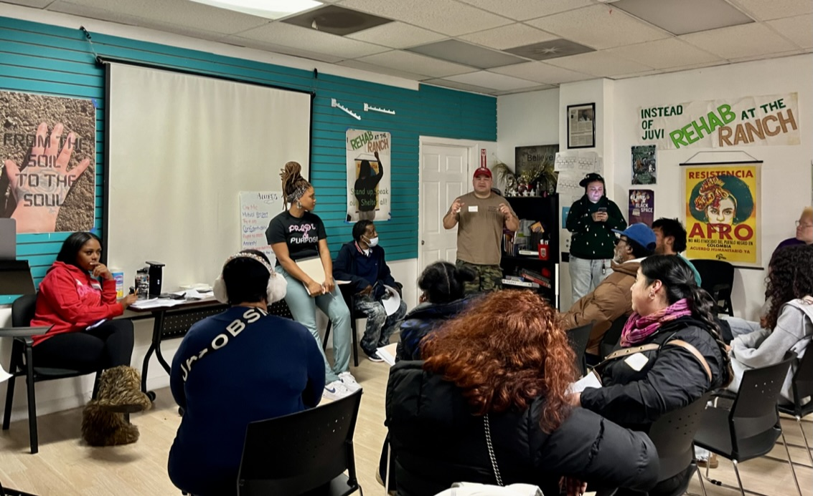
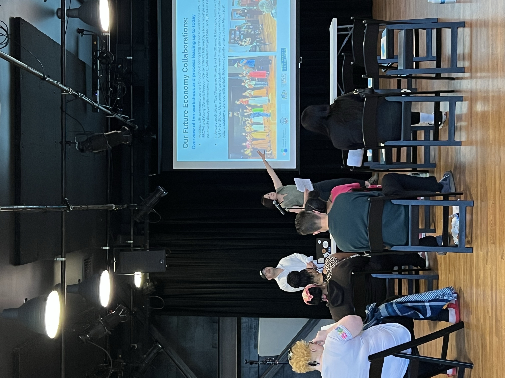
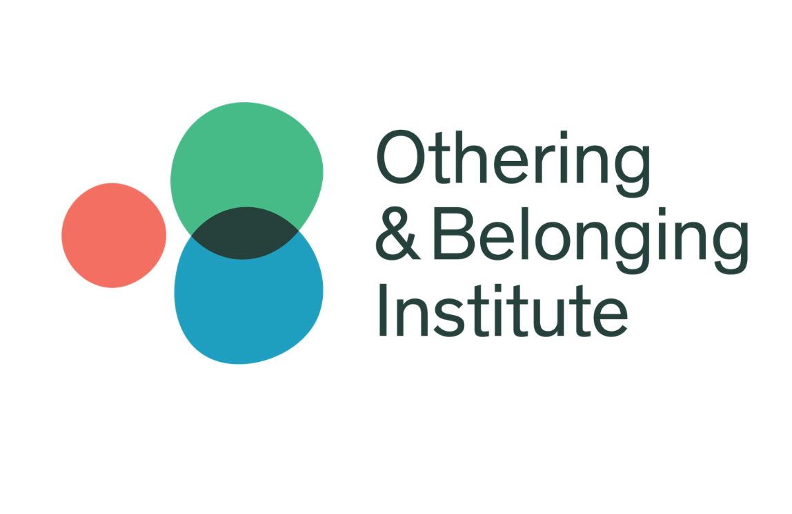

Our Future Economy Project
Our Future Economy grew from a question Richmond community leaders were already asking: what can the community and city of Richmond do to plan for a future economy that is free from fossil fuels?
The project creates space for Richmond and North Richmond residents to take on that question together — to address urgent needs, reckon with past harms that continue to shape people's lives, imagine a different future, and identify the projects and priorities that can help build it.
At the heart of the work is the belief that the economy is not something that simply happens to us. Communities can help design and shape it. Through public gatherings, arts and cultural strategy, participatory research, and community planning, Our Future Economy supports residents in sharing knowledge, building relationships, developing plans, and strengthening their capacity to advocate for an economy that supports the well-being of workers, residents, and the environment.
This work builds on transformations already underway in Richmond and North Richmond — from polluter-pays tax revenue and a local food system anchored by an urban farm to youth spaces, city job programs, sustainable energy production, union and community alliances, and progressive tax policies. Our Future Economy seeks to connect and strengthen these efforts while building the ideas, relationships, structures, and capacities needed for a just transition.
Read more
How does a community come together to dream, plan, and build out an economy that supports the well-being of all workers, residents, and our environment? What strategies, ideas, skills, and relationships are needed? How do we move from the pressing needs of today, address the past harms that still impact so many lives, and envision a future that doesn't repeat these challenges? How can solutions be responsive to our city of Richmond, California, while also aligning with global goals for a healthy planet? Our Future Economy focuses on these questions through a series of engagements for the public to co-create knowledge, plans, and capacities.
Too often, "the economy" is something that happens to us, not something that we design. Even urban planners often treat the economy as something they can only set the table for through land-use zoning, worker training, and offering subsidies or tax breaks. And yet, looking at history, every major economic transition has involved essential moves made by government entities: contracting, setting regulations, investing, conducting research, planning, and using other means of shaping the new economy.
We collaborated on this project because we heard community leaders ask: "What can the community and city of Richmond do to plan for a future economy that is free from fossil fuels?" They expressed a desire to create spaces where residents are supported in discussing their needs, dreaming about their future, making plans, and advocating for what kinds of projects they would prioritize.
Our Future Economy is a public event series to explore transforming economies for communities, workers, and climate well-being, rooted in Richmond and North Richmond, CA. This series is part of a larger Othering & Belonging Institute laboratory integrating arts and cultural strategy with participatory research to create space for radical imagination and community building in this time, and to ensure that we are centering the voices, needs, and expertise of those most impacted by economic and environmental harms.
The realities of concentrated wealth and vast material needs, human-made disasters, and persistent racial and gendered hierarchies continue to generate poverty, trauma, health crises, and displacement. The need to reimagine and redesign local, regional, and transnational economies is more pressing than ever.
Richmond and North Richmond are already transforming for a more just and resilient future with polluter-pays tax revenue, a local food system anchored by an urban farm, a new youth commons, city job programs, sustainable energy production, union and community alliances, progressive tax policies, and more. Meeting community needs and advancing a just transition of the local economy requires ideas, relationships, structures, and capacities that our movements and communities are both developing and reclaiming from their lineages.
Our Process of Collaborating
Since 2025, Our Future Economy has brought Richmond and North Richmond residents, community organizations, artists, and organizers together to imagine what a more just and thriving local economy could look like.
Through free community events, workshops, performances, storytelling, and conversations, residents have shared what a "good life" means to them, what they value about their communities, and what changes they want to see. The OFE collaborators have worked together to turn these ideas into priorities and identified projects that contribute to this vision.
At the heart of this process is the listening. Rather than starting with a fixed definition of a "just transition," the collaboration is grounded in residents' lived experiences, knowledge, culture, and ideas about what Richmond and North Richmond need to thrive.
Read more
Since January of 2025, our organizations have been co-creating workshops and other events where residents share their visions of the future and help to build a more just economy in Richmond, North Richmond, and beyond. Public events have been free and open to all, and both events and workshops have been intentionally designed to support the participation of those most harmed and marginalized by the current economy. These events and workshops center Richmond and North Richmond residents, organizers, artists, and cultural workers, and integrate arts and cultural strategies through music, dance, applied theater, speakers, story circles, community dialogue, and time to socialize.
The goals of the collaboration are:
- Amplify the voices of Richmond and North Richmond, lived experiences, ancestral knowledge, cultural practices, community visions, values, and frameworks, exemplary place-based efforts, and related plans and policies that can help facilitate a just transition.
- Work through arts and cultural strategy to facilitate dialogue and practices that apply local knowledge and generate ideas for initiatives that both meet community needs and transform the economy away from dependence on fossil fuels.
- Create space for coalition-building, thought-partnering, and resource-sharing between our Richmond- and North Richmond-based partner organizations.
- Share ideas, examples, goals, and strategies from national and global movements and values-aligned scholar practitioners.
In February of 2025, the Our Future Economy series held its first event at the Richmond Memorial Auditorium, co-hosted by the Othering and Belonging Institute and co-sponsored by local organizations Asian Pacific Environmental Network, Cooperation Richmond, East Bay Center for Performing Arts, Healthy Richmond, Community Housing Development Corporation, Full Spectrum Labs, Richmond Community Foundation, Rising Juntos, RYSE, Safe Return Project, San Francisco Foundation, Sojourner Truth Presbyterian Church, Sustainable Economies Law Center, Urban Habitat, and Urban Tilth.
The MC was Luna Angulo, a visionary local organizer working for climate justice and just transition, and speakers included Reverend Kamal Hassan of Sojourner Truth Presbyterian Church, OBI Community Power and Policy Partnerships Director / Richmond resident Eli Moore, and Principal of Full Spectrum Capital Partners and co-founder/Senior Advisor to Movement Strategy Center Taj James. There were performances by East Bay Center for Performing Arts' Son de la Tierra and the Othering & Belonging Institute's Belonging Resident Company, as well as playback theater to gather participants' input about their experiences of being involved in similar community processes. Community members explored their visions for Richmond's future economy through a Padlet exercise, in which they wrote and shared reflections with one another on what "the good life" would be for them. Participants also shared what they see as existing strengths and assets that Richmond has and should build on.
In April of 2025, the Othering & Belonging Institute hosted a virtual event where we explored approaches to a just transition more broadly, situating the work happening in Richmond and North Richmond in both the national and global contexts of this work. This event lifted up the strategies of invest/divest, arts and cultural strategy, and legal strategy as they are currently being applied to just transition work throughout the Americas. Speakers included Ricardo Nuñez of the Sustainable Economies Law Center alongside OBI collaborators Sarah Crowell, José Richard Aviles, Chelsea Gregory, and Eli Moore. The event started with mindfulness and "movement for movements" designed for the Zoom space, and participants closed out by reflecting on how they might apply the three strategies in their communities.
Following these public events, Richmond and North Richmond organizations collaborated more in-depth on workshops designed for residents to generate visions for a future economy and priority projects that could help make progress toward this future. These deeper collaborations began through workshops with East Bay Center (EBCPA) and Young Women's Freedom Center (YWFC), followed by a town hall-style workshop and community dialogue with members of YWFC, EBCPA, and Safe Return Project (SRP) in December 2025. These workshops and the town hall helped convey to community members why this work is timely given the Chevron polluters pay settlement and other potential support for just transition work, and also generated interest in being part of a participatory process of identifying priorities for how funds could be spent. Urban Tilth also collaborated with OBI in that timeframe to co-design a series of participatory planning workshops called Not for Us Without Us that launched in North Richmond in early 2026, to ensure that North Richmond would be centered as a fenceline community and not left out of these conversations. This phase helped continue to strengthen relationships between organizational partners and community members, reveal the challenges community members face, their visions for a future economy, and the deep expertise they hold. Throughout the process, Our Future Economy has been guided by insights from Richmond and North Richmond community members' lived experience, ancestral knowledge, and cultural practices of care for the earth and their fellow community members.
Our Future Economy Process at-a-Glance
- February 2025
In-person public launch event at the Richmond Auditorium.
- April 2025
Public online event.
- July 2025
First workshop with OBI and EBCPA.
- November 2025
First workshop series with OBI and YWFC.
- December 2025
Town hall with OBI, YWFC, EBCPA, and SRP.
- January 2026
First set of workshops with Urban Tilth and OBI in North Richmond.
- February 2026
Second set of workshops with Urban Tilth and OBI in North Richmond.
- March 2026
First workshops with Safe Return, YWFC, Cooperation Richmond, and OBI.
- March 2026
Vote and culminating event with Urban Tilth in North Richmond.
- April 2026
Final workshops with Safe Return, YWFC, Cooperation Richmond, and OBI.
- May 2026
Workshop supporting East Bay Center youth's video project.
- May 2026
Event with East Bay Center, Safe Return, YWFC, and OBI.





Collaborator Bios
This project was shaped by the organizations below — each brought their own base of members, expertise, and relationship with Richmond.
Full Spectrum Labs
Full Spectrum Labs works at the intersection of community planning, economic strategy, institutional design, and capital development, supporting communities pursuing Just Transition strategies — from defining long-term economic visions to designing governance structures and capital strategies.
Read more
A central area of our work involves supporting communities pursuing Just Transition strategies. This includes helping communities define long-term economic visions, identify implementation pathways, design governance structures, develop capital strategies, and strengthen the ecosystem of organizations needed to steward transformation over time.
Richmond has emerged as one of the places where these questions are being actively explored. Through the Good Life Pledge initiative, Richmond has also been identified as one of a small number of communities receiving support for community-led economic transformation efforts. Within the Our Future Economy project, Full Spectrum's role has primarily been one of facilitation, synthesis, and strategic support — helping surface and connect the visions that already exist within the community.
Cooperation Richmond
Cooperation Richmond is a cooperative business incubator founded in 2017 and fiscally sponsored by Urban Tilth, supporting Richmond entrepreneurs who want to launch cooperatives through non-extractive lending and business training.
Read more
In addition to supporting local entrepreneurs, Cooperation Richmond is actively developing a cooperatively owned grocery store in North Richmond, where resident co-owners will have access to high-quality food and organic produce while building generational wealth through ownership. Through our work with Richmond Our Power Coalition (ROPC), we help fund and organize Anti-Chevron Day and support APEN's Make Polluters Pay initiatives. ROPC's Family of Funds has enabled us to regrant $1.47M to date to community organizations advancing just transition work across Richmond.
During the Our Future Economy project, Cooperation Richmond partnered with Safe Return Project, OBI, and Young Women's Freedom Center to host a series of community meetings centering the voices of residents re-entering society, which directly shaped Cooperation Richmond's incubator model.
Young Women's Freedom Center
For the past 32 years, Young Women's Freedom Center (YWFC) has supported system-impacted young women, trans, and gender-expansive youth throughout California through advocacy, community-based research, health and wellness, and leadership training.
Read more
In 2025, YWFC conducted a survey to gather more information on the needs and experiences of system-impacted youth in Richmond, and requested facilitation training from OBI to support their youth interns' participation in the Our Future Economy series.
In December of 2025, YWFC and OBI co-facilitated a town hall for system-impacted youth and community members at the Safe Return Project space, integrating story circles, youth arts and culture presentations, and small group dialogue, which helped curate a comprehensive list of potential just transition projects.
Urban Tilth
Urban Tilth was founded in 2005 to help build a more sustainable, healthy, and just local food system in North Richmond, and has become a leader in both community-engaged food justice and just transition work.
Read more
Urban Tilth, the Watershed Project, and the Othering & Belonging Institute co-led Not for Us Without Us, a series of North Richmond participatory planning workshops across Corinne Sain Senior Center, Zoom, and Verde Elementary School — beginning with story circles on land stewardship and community care, then moving into popular education on environmental racism, climate justice, and proposed North Richmond projects.
The workshops culminated in a community celebration and project vote in March 2026 at Verde Elementary School, with results shared on the Urban Tilth website. Next steps include convening a resident leadership group to continue advocacy through the North Richmond MOU Coalition.
East Bay Center for the Performing Arts
Since 1968, East Bay Center for the Performing Arts (EBCPA) has engaged youth in "imagining and creating new worlds for themselves and new visions for their community" through arts and culture work, with leadership development central to their programs.
Read more
Recent examples include presenting at school board meetings and participating in the Invest in Youth Coalition with several other Richmond-based organizations. In the spring of 2026, OBI collaborated with a group of EBCPA youth to create a short video highlighting the challenges they face and their visions for Richmond, shared at Uplifting Our Visions in May 2026 and used as an ongoing advocacy tool. Watch the video
Safe Return Project
Safe Return Project (SRP) was founded in 2010 and has spent the past 16 years working through community organizing, research, and advocacy to re-enfranchise those disenfranchised by criminalization, racial disparity, and poverty.
Read more
Starting in 2019, SRP began exploring the connections between abolition and just transition organizing by joining the Movement for Mass Liberation and Deep Democracy — working to make the just transition narrative more inclusive of formerly incarcerated people. This was followed by ongoing participatory research in re-entry and job training, contributions to the Blue Green New Deal, and, in 2024, the Mass Liberation & Climate Justice Toolkit created with OBI, Be the Change, and Sharp as Knives.
In February 2026, SRP hosted Cooperation Richmond, YWFC, and OBI to co-design a series of workshops with system-impacted and formerly incarcerated community members, culminating in Uplifting Our Visions at East Bay Center for Performing Arts in May 2026.

Othering and Belonging Institute
The Othering and Belonging Institute (OBI) has collaborated with community-based organizations in Richmond since 2013, focused on preventing displacement, protecting low-income tenants, and building capacity for community-driven development and participatory planning.
Read more
OBI's Community Power and Policy Partnership team's contributions to just transition planning in Richmond started with the Richmond Listening Project, a participatory research project and podcast series documenting Richmond residents' experiences of the fossil fuel economy. OBI also compiled data on the harms and dependencies the city has on that economy, and produced the animated video "How to Plan for an Economy Beyond Fossil Fuels."
In late 2024, OBI invited Richmond partners to collaborate on creating space for residents to shape the future economy, guided by OBI's Transformative Research Methodology, which intentionally integrates arts and cultural strategies to center community expertise and create openings for self-determination.